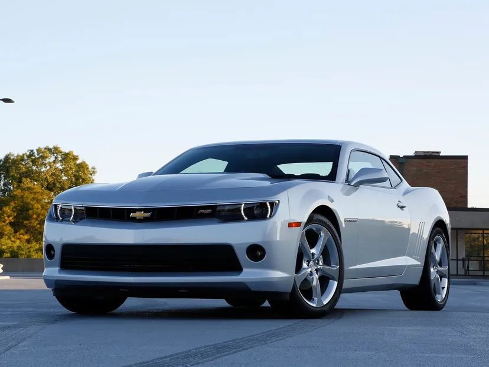
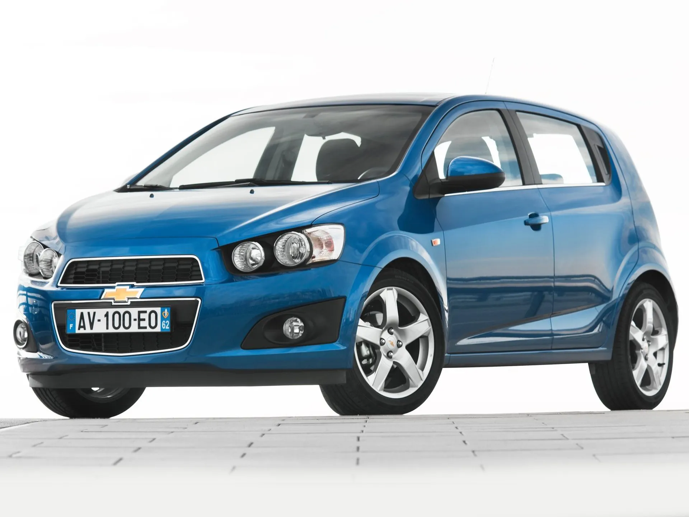
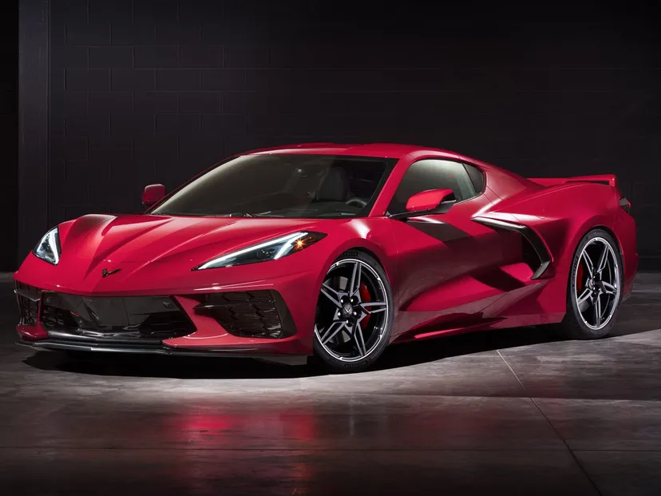

El Chevrolet Corvette

El Chevrolet Corvette es un icono de la industria automotriz estadounidense, conocido por su
potencia, estilo distintivo y legado en el mundo de los deportivos. Aquí tienes algunos aspectos
destacados sobre este vehículo:
Historia:
El Corvette fue introducido por primera vez por Chevrolet en 1953 como un automóvil deportivo de
dos plazas. Desde entonces, ha pasado por varias generaciones y rediseños, convirtiéndose en uno
de los autos deportivos más emblemáticos de Estados Unidos.
Rendimiento:
El Corvette se ha ganado su reputación gracias a su potencia y rendimiento. A lo largo de los
años, ha estado disponible con una variedad de motores, desde V6 hasta V8 de alta potencia, que
ofrecen una aceleración impresionante y una velocidad máxima emocionante. Modelos más recientes
han incorporado tecnología de vanguardia para mejorar aún más su rendimiento, como sistemas de
suspensión ajustables y transmisiones avanzadas.
Diseño:
El Corvette se caracteriza por su diseño aerodinámico y sus líneas agresivas. A lo largo de los
años, ha evolucionado en términos de diseño, incorporando elementos modernos y futuristas
mientras se mantiene fiel a su herencia. Su forma distintiva y sus detalles de estilo lo hacen
reconocible al instante en la carretera.
Innovación tecnológica:
A medida que avanza la tecnología automotriz, el Corvette ha seguido el ritmo, incorporando
características avanzadas en sus modelos más recientes. Esto incluye sistemas de
infoentretenimiento de última generación, asistentes de conducción avanzados y opciones de
personalización que permiten a los conductores adaptar su experiencia de manejo a sus
preferencias individuales.
Precio y disponibilidad:
Aunque el Corvette ofrece un rendimiento y estilo de clase mundial, su precio suele ser más
accesible en comparación con otros superdeportivos de su calibre. Sin embargo, los modelos más
exclusivos y de alto rendimiento pueden tener precios significativamente más altos. Además, la
disponibilidad del Corvette puede variar según la región y la demanda del mercado.
En resumen, el Chevrolet Corvette es más que un simple automóvil deportivo; es un símbolo de
ingeniería estadounidense, rendimiento emocionante y pasión por la conducción. A lo largo de sus
décadas de producción, ha dejado una marca indeleble en la industria automotriz y sigue siendo
un favorito entre los entusiastas de los deportivos en todo el mundo.
El Chevrolet Aveo

El Chevrolet Aveo es un automóvil compacto que ha sido parte de la línea de productos de
Chevrolet desde finales de la década de 2000. Aquí tienes algunos detalles sobre este modelo:
Historia:
El Chevrolet Aveo se introdujo por primera vez en 2002 como un automóvil compacto diseñado para
el mercado global. Originalmente, fue desarrollado por Daewoo Motors en Corea del Sur y luego
fue adquirido por General Motors, quien lo rebautizó como Chevrolet Aveo para su
comercialización en diferentes regiones del mundo.
Rendimiento:
El Corvette se ha ganado su reputación gracias a su potencia y rendimiento. A lo largo de los
años, ha estado disponible con una variedad de motores, desde V6 hasta V8 de alta potencia, que
ofrecen una aceleración impresionante y una velocidad máxima emocionante. Modelos más recientes
han incorporado tecnología de vanguardia para mejorar aún más su rendimiento, como sistemas de
suspensión ajustables y transmisiones avanzadas.
Diseño y estilo:
En sus primeras generaciones, el Aveo tenía un diseño más convencional, con líneas suaves y una
apariencia típica de un automóvil compacto. Sin embargo, con las actualizaciones posteriores,
adoptó un estilo más moderno y aerodinámico, alineándose con la evolución del diseño automotriz
de la época.
Tamaño y Espacio:
Como un automóvil compacto, el Chevrolet Aveo ofrecía un tamaño ideal para la conducción en
entornos urbanos. A pesar de su tamaño compacto, solía ofrecer un interior espacioso y cómodo
para los pasajeros, así como un maletero lo suficientemente grande para el equipaje y otros
objetos.
Motorización y Rendimiento:
El Aveo ha estado disponible con una variedad de opciones de motor a lo largo de los años,
incluidos motores de gasolina y diésel. Estos motores solían ofrecer un rendimiento adecuado
para la conducción diaria, con un énfasis en la eficiencia de combustible y la fiabilidad.
Recepción y Popularidad:
El Aveo ha sido un modelo popular en varios mercados debido a su combinación de precio
asequible, economía de combustible y practicidad como vehículo urbano. Sin embargo, también ha
recibido críticas en algunos aspectos, como la calidad de los materiales interiores y el
rendimiento del motor en comparación con otros competidores en su segmento.
Características y Equipamiento:
A lo largo de sus diferentes generaciones, el Aveo ha ofrecido una gama de características y
equipamiento que varían según el mercado y el nivel de acabado. Esto incluye sistemas de
infoentretenimiento, tecnología de seguridad, comodidades interiores y opciones de
personalización.
El Chevrolet Camaro

El Chevrolet Camaro es otro ícono estadounidense en la industria automotriz, conocido por su potencia, diseño audaz y su papel en la cultura del automóvil. Aquí te proporciono una visión general de este legendario automóvil:
Historia:
El Camaro fue introducido por primera vez por Chevrolet en 1966 como respuesta al éxito del Ford Mustang. Desde entonces, ha pasado por varias generaciones y ha evolucionado significativamente en términos de diseño, rendimiento y tecnología. A lo largo de las décadas, ha mantenido su estatus como un automóvil deportivo emblemático y deseable.
Rendimiento:
Una de las características más destacadas del Camaro es su impresionante rendimiento. Ha estado disponible con una amplia gama de motores a lo largo de los años, desde V6 hasta V8 de alto rendimiento, que ofrecen una potencia impresionante y una aceleración emocionante. Modelos más recientes han incorporado tecnología avanzada para mejorar aún más su rendimiento, como sistemas de suspensión ajustables y modos de conducción seleccionables.
Diseño:
El Camaro se distingue por su diseño musculoso y sus líneas agresivas. A lo largo de las generaciones, ha adoptado diferentes estilos de carrocería, desde clásicos hasta más modernos y futuristas. Sin embargo, ha mantenido una presencia visualmente impactante en la carretera, lo que lo convierte en un objeto de deseo para muchos entusiastas de los deportivos.
Tecnologia:
A medida que avanza la tecnología automotriz, el Camaro ha integrado características avanzadas en sus modelos más recientes. Esto incluye sistemas de infoentretenimiento de última generación, asistentes de conducción avanzados, como sistemas de advertencia de colisión y control de crucero adaptativo, y opciones de conectividad para dispositivos móviles.
Precio y disponibilidad:
Si bien el Camaro ofrece un rendimiento de clase mundial y un diseño emocionante, su precio puede variar según la configuración y el nivel de equipamiento. Los modelos de nivel de entrada suelen ser más accesibles, mientras que las variantes de alto rendimiento pueden tener precios más altos. Además, la disponibilidad del Camaro puede variar según la región y la demanda del mercado.